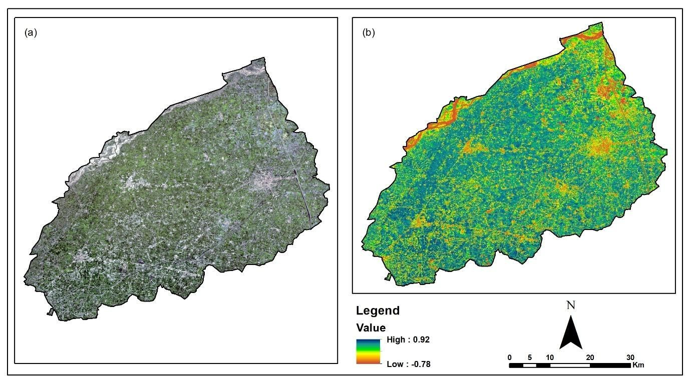
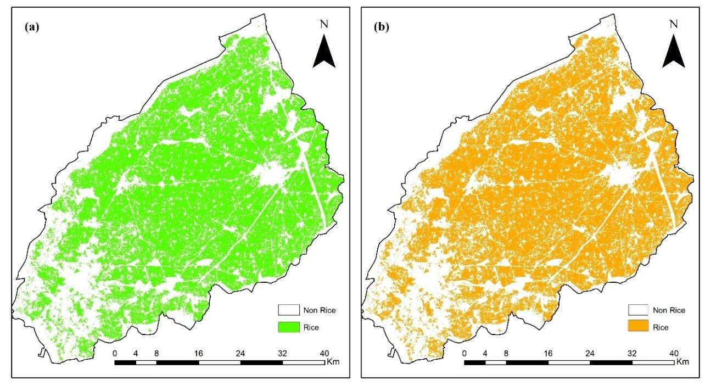
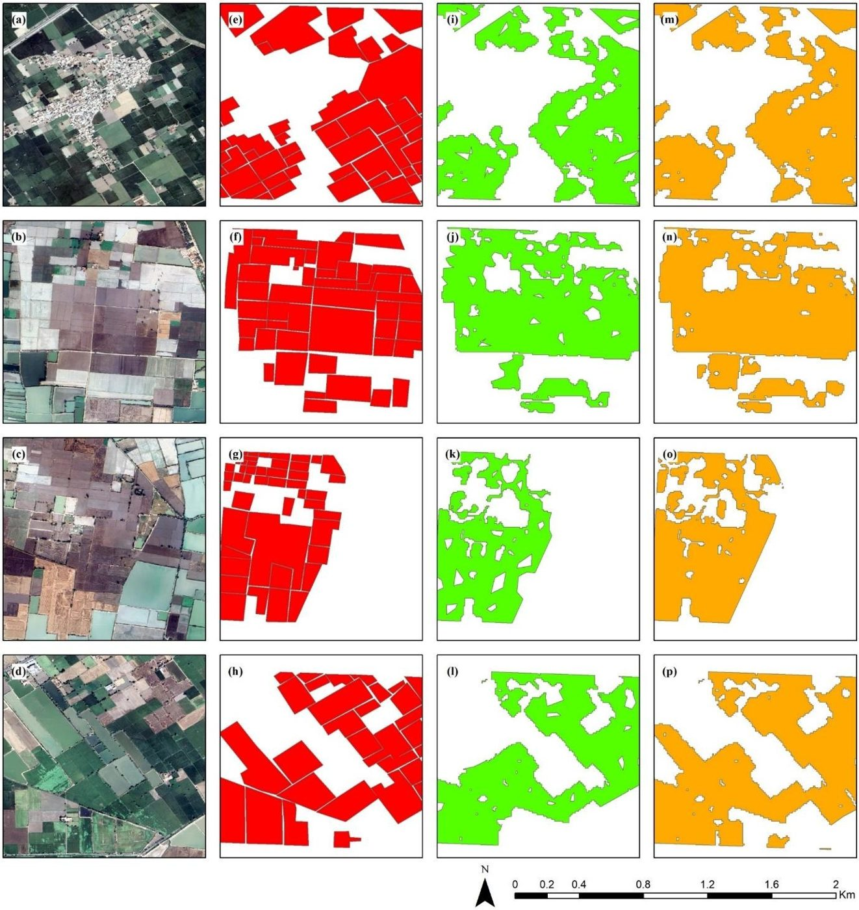
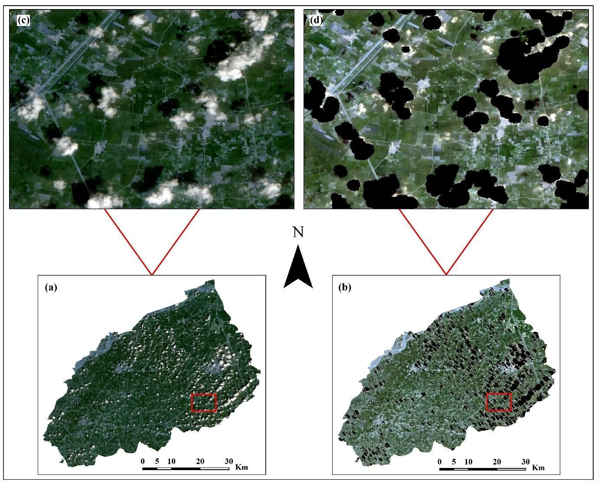
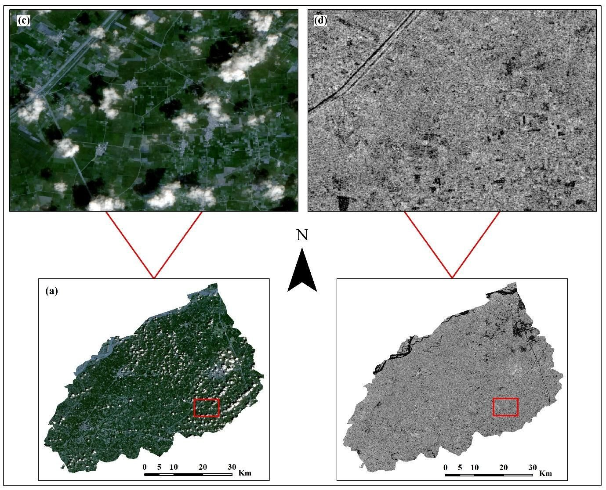
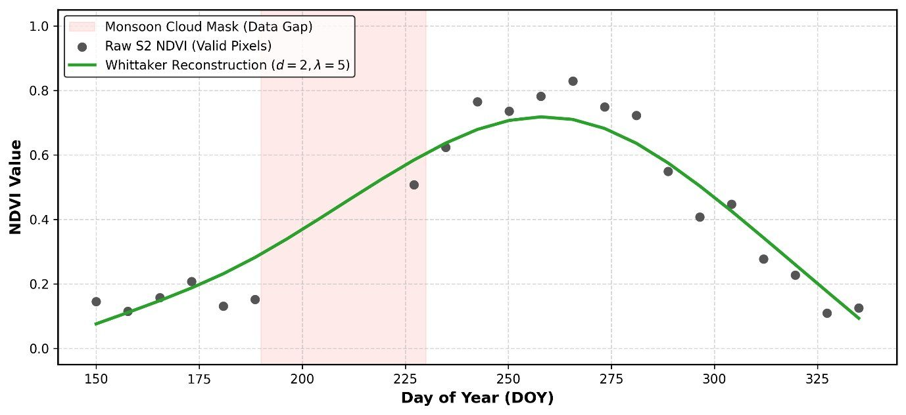
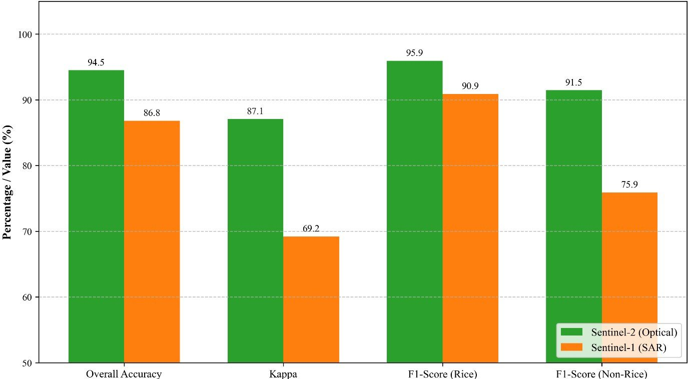

Machine Learning Engineer and Team Lead building production satellite mapping systems, from field level to national scale, for agribusinesses and development agencies across Asia, Africa and South America.

End-to-end geospatial work: from raw imagery to validated, delivered products.
Crop type, forest, water and built-up mapping with area statistics, from a single field to a whole country.
Sentinel-1 time series for cloudy and monsoon regions where optical satellites miss the season.
Random Forest, XGBoost, LightGBM, CNN and U-Net models, plus Segment Anything (SAMGeo) for field boundaries.
NDVI and other indices, gap-filled time series, sowing and harvest detection, change detection.
Python, Google Earth Engine and STAC pipelines with data quality checks that catch errors before they reach the client.
Django, GeoServer, PostGIS, Leaflet and OpenLayers, including live field-survey data through ODK Central.
Industry work in Earth observation, GIS and machine learning.
Case study from my M.Phil. research: optical vs radar crop mapping in Punjab, Pakistan.

I mapped crops across a full district with Sentinel-2 (optical) and Sentinel-1 (radar), and compared both for accuracy and computational cost. The optical model reached 94.5% overall accuracy and the radar model 86.8%, while radar kept working through the monsoon cloud gap.
Model outputs were checked field by field against reference boundaries at four validation sites, so the reported accuracy reflects real fields, not just random pixels.





Public repositories on GitHub.
Sentinel-1 SAR preprocessing and time-series feature pipeline in Google Earth Engine for mapping paddy rice under monsoon cloud.
View on GitHub →Field-level rice, sugarcane and cassava maps from radar plus optical data, XGBoost and LightGBM, one polygon per field.
View on GitHub →Multi-crop acreage mapping from Sentinel-2 and Landsat: NDVI time series Random Forest plus static XGBoost, Earth Engine or STAC data.
View on GitHub →Sugarcane mapping with a date-robust static classifier, rebuilt after finding data leakage in a random pixel split.
View on GitHub →Sentinel-1 preprocessing with terrain flattening, track audit and a pixel time-series explorer for maize in cloudy regions.
View on GitHub →Field boundaries for any area from the open Fields of The World dataset: cleaned, measured and written to GeoPackage.
View on GitHub →Reconciles model-detected crop polygons with surveyed field boundaries using clear geometric rules.
View on GitHub →Dissolves shapefiles with 1.5M+ features with bounded memory, resumable state and parallel I/O.
View on GitHub →Area, perimeter and compactness statistics for field polygons from GeoParquet, as a library or command-line tool.
View on GitHub →Peer-reviewed research in remote sensing and machine learning.
M.Phil. Space Science, 2024 – 2026
Institute of Space Science, University of the Punjab, Lahore
Gold Medalist, CGPA 3.98 / 4.00. Thesis: Sentinel-1 SAR vs Sentinel-2 optical data for crop classification.
B.S. Space Science, 2020 – 2024
Department of Space Science, University of the Punjab, Lahore
CGPA 3.83 / 4.00. Final-year project: WebGIS application with Leaflet, GeoServer, PostGIS and Django.
Have satellite or GIS data that needs answers? Get in touch.